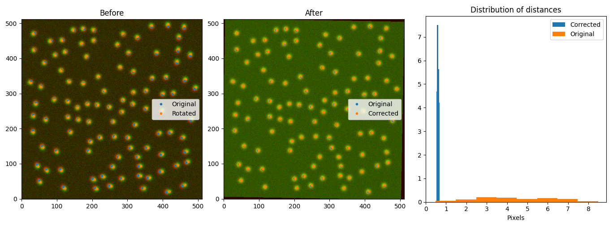
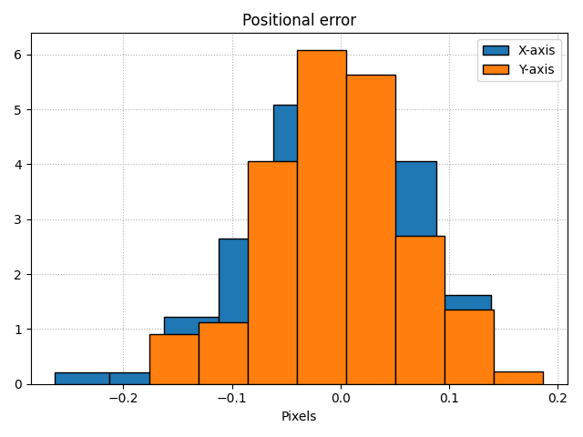
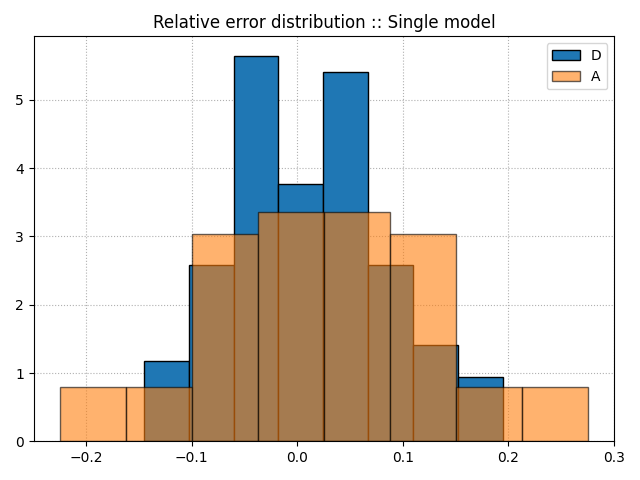
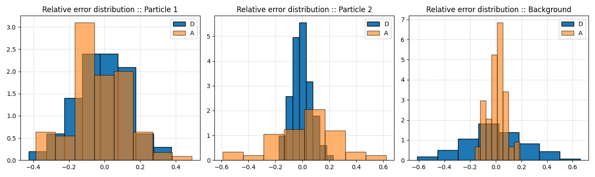

Library tests
All the core libraries developed were tested using the Google Tests framework. These tests are not compiled by default, but can be build by setting the option BUILD_GOOGLETESTS with CMake. Beware that these tests won't be installed along with GP-Tool as it is meant for development purposes. The test code can be found under Methods/tests. In the following sections I present some of the most essential tests, but more can found in the previously cited address.
Alignment
To test the alignment library, we generate an image contening several Gaussian shaped spots placed in random locations. This very image is then translated, rotated and rescaled to simulate problems we usually observe throughout experiments and used as a second channel. Later on, Poisson noise is included in both channels. Keeping track of the simulated and distorted positions, we apply the alignment algorithm and compare the distance distribution before and after correction. In a perfect world, we would expect a delta distribution centered at zero, but that is hardly the case.
The results presented demonstrate that the algorithm brings down the expected error to the subpixel level even in a relatively low signal to noise ratio.
Localization enhancement
To test if the enhancement algorithm is correct, I generate small images with noisy Gaussian shaped spots and compare the estimated localization and error with actual position and measured error. Being a sthocastic method, we consider that this algorithm is correct if the absolute z-score of the mean localization is inferior to a standard deviation of the mean, assuming that the population distribution is centered at zero. Also, we expected that the measured error is within the distribution range (95%) of the estimated error. In the following plot we show a histogram of errors between set and enhanced localizations. Optimally, this distribution is centered at zero and as narrow as possible.
Diffusion properties
Single trajectories
The estimation of the apparent diffusion and anomalous coefficient is straight foward. In the test function, we genretate 100 trajectories using Gaussian process sampling with a fractional Brownian motion covariance matrix. Then, we apply the GP-FBM library and compare the results. The test passes if the relative average error calculated for both coefficients is inferior to 5%. In the following image we show the distribution of relative errors.
Substrate correction
Similarly to the case of single trajectories, now we generate 100 samples of 3 trajectories and consider one of them as substrate, hence adding its displacement to all the others. Having 2 trajectories subjected to the same background motion, we submit them into our GP-FBM library and compare the results with the set values. Once again, we pass the test if the relative average error for all coefficients are inferior to 5%. In the following image, we show the distribution of errors for all the trajectories simulated.
